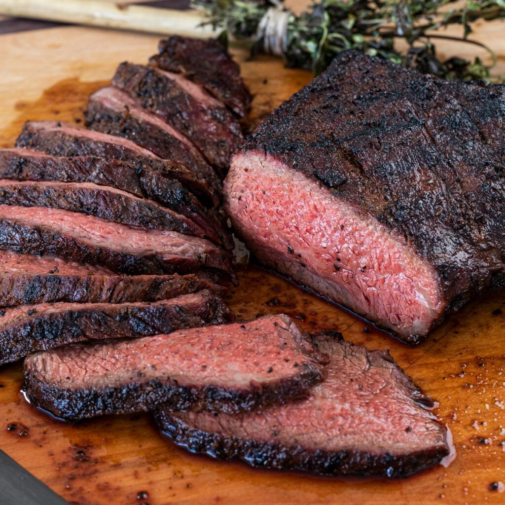

Tritip

Tritip
Found on allrecipes.com. The expected prep time for this recipe is 20 minutes,
cook time is 25 minutes, and an additional 4 hrs and 30 minutes for anything
that comes up. It should be a total of 5 hrs 15 minutes and serves 6
Ingredients
- 2 teaspoons salt
- 2 teaspoons freshly ground black pepper
- 2 teaspoons garlic powder
- 1 ½ teaspoons paprika
- 1 teaspoon onion powder
- 1 teaspoon dried rosemary
- 1/4 teaspoon cayenne pepper
- 1 (2 1/2 pound) beef tri-tip roast
- 1/2 cup red wine vinegar
- 1/3 cup vegetable oil
- 4 clovescrushed garlic
- 1/2 teaspoon Dijon mustard
Steps
- Stir salt, black pepper, garlic powder, paprika, onion powder, rosemary,
and cayenne pepper together in a bowl.
- Place tri-tip in a glass baking dish and coat on all sides with spice
mixture. Cover the dish with plastic wrap and refrigerate for 4 hours.
- Combine vinegar, vegetable oil, crushed garlic, and Dijon mustard
in a sealable container. Cover the container and shake until ingredients are blended.
- Remove tri-tip from the refrigerator. Let sit uncovered at room
temperature for 30 minutes.
- Preheat an outdoor grill for high heat; lightly oil the grates.
- Place tri-tip on the preheated grill and brush with vinegar mixture. Cook for 4 minutes,
flip, and baste. Flip and baste every 4 minutes until tri-tip starts to firm up and is
reddish-pink and juicy in the center, 25 to 30 minutes total. An instant-read thermometer
inserted into the center should read 130 degrees F (54 degrees C). Let rest for at
least 10 minutes before slicing.